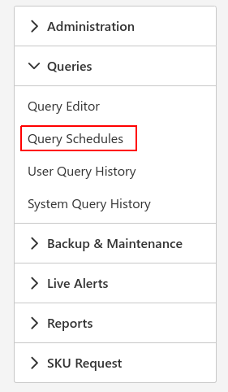
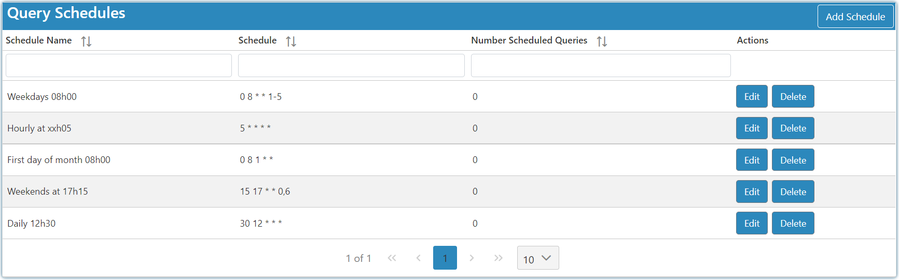

Scheduling
To schedule queries go to the Query Schedules page where you can create schedules which can be added to queries.

- Schedule Name: The scheduled date and time.
- Schedule: The scheduled date and time using a cron string.
- Number Scheduled Queries: The amount of times the specific schedule has been assigned to a query.

On the Adding and Editing Screen you set the date with cron which will generate the schedule name for you automatically. You can also set the schedule name to a custom one.
With the Next Executions screen you can make sure the schedule will be firing off your query at the correct intended dates and times. !!!Cron time Consists of five asterisks which correlate to the time/date format in the following order.
* Minute
* Hour
* Day of the month
* Month
* Day of the week
Useful Operators
* ** * ** any value
* **,** value list seperator
* **-** range of values
* **/** allows you to step values
For more assistance around creating cron strings please visit <https://crontab.guru>